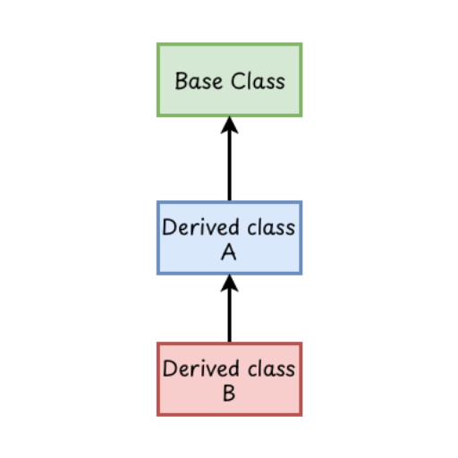
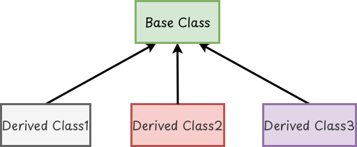
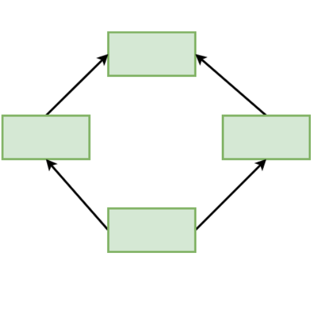

Approaches of Program Development
- Generally there are two ways of program development they are follows:-
-
Procedure Oriented Programming
- It is a conventional or old method of programming in which the program is written into many small parts and are combined together.
- The main focus is on procedure rather than data.
- It is just a list of instructions like get some input, add these numbers, divide by number and finally display the output.
- Procedure Oriented Programming language uses high level language such as COBol, FORTRAN, C etc.
-
Object Oriented Programming(OOP)
- It is a modern approach of programming in which both data and function are combined into a single unit which is called an object.
- This approach is based on the data rather than procedure (function) and programs are normally divided into objects.
- All the modern programming languages like Java, Python C++, dot net follow this approach.
Differences between POP and OOP
| Procedure Oriented Programming(POP) | Object Oriented Programming(OOP) |
|---|---|
| Convenient approach to programming. | It is a modern approach. |
| Programs are divided into modules. | Programs are divided into objects. |
| It follows a top-down method. | It follows the bottom-up method. |
| Generally data cannot be hidden. | Data can be hidden. |
| It does not model the real world perfectly. | It models the real world perfectly. |
| Code maintenance is difficult. | Code maintenance is easy. |
| Code reusability is difficult. | Code reusability is easy. |
| Examples: FORTRAN, COBol, Pascal, C, etc. | Examples: C++, JAVA, Python, etc. |
Features of OOP
- The object oriented programming language supports the following concepts.
-
Objects
- In OOP objects are the basic runtime entities. It is an instance of the class and it may be a person, place or table of data.
- Syntax: Class_name Object_name
- Example: College NAST Birds parrot
-
Class
- Class is a common name given to the object of similar characteristics. It is a blueprint that describes the details of an object.
-
Inheritance
- It is the process by which objects of one class acquire the properties of objects of another class in a secure manner.
- It is an ability to create a new class from a pre-existing class. Where pre-existing class is called parent class or base class and newly formed class is called child or derived class.
- The major advantage of inheritance in OOP is code reusability. This means that we can add additional features to an existing class without modifying it.
-
Single level inheritance
- A derived(child) class inherits from only one base(parents) class.
- Example: A car inherits from a vehicle class, gaining all its properties & methods.

Fig: Single level inheritance -
Multilevel inheritance
- A derived(child) class inherits from a base(parents) class which in turn is derived from another base(parent) class creating a chain of inheritance.
- Example: Animal → Mammal → Dog
- A Dog inherits from a Mammal and Mammal inherits from an Animal.

Fig: Multilevel inheritance -
Multiple inheritance
- A derived(child) class inherits from two or more base(parents) classes simultaneously.
- Note: Some languages, like JAVA, do not directly support multiple inheritance of classes due to complexity but allow it though interfaces.

Fig: Multiple Inheritance -
Hierarchical inheritance
- A single base class serves as a parent class for multiple derived(base) classes.
- Example: A shape class could be the parents class of circle, square, and triangle classes.

Fig: Hierarchical Inheritance -
Hybrid inheritance
- This is the combination of any two or more of the other types of inheritance.
-
Example: A scenario combination multilevel and hierarchical hierarchical inheritance, or multiple and multilevel inheritance.

Fig: Hybrid Inheritance
Types of inheritance:
Data Encapsulation
- The wrapping of data and function into a single unit is called data encapsulation.
- The main purpose of data encapsulation is handling the complexity.
- The encapsulated data is not accessible from the outside world, only those functions which are wrapped in it can access it.
Data Abstraction
- The act of representing only essential features without including the background details or explanations is called data abstraction.
- In one word abstraction means show only what is necessary.
- It is achieved through encapsulation.
Polymorphism
- It is an ability to take more than one form or multiple forms.
- An operator may exhibit different behaviour in different instances.
-
Polymorphism can be implemented by two ways
-
Static Polymorphism
- It uses the concept of operator overloading. It is the process of making an operator exhibit different behaviour in different instances.
-
Dynamic Polymorphism
- It uses the concept of overriding. It allows a subclass or child-class to provide a specific implementation of a method that is already provided by its parent class.
- It helps to achieve runtime polymorphism.
-
What are the major differences between Data Abstraction and Encapsulation?
The following are the major differences between Data Abstraction and Encapsulation.
| Data Abstraction | Data Encapsulation |
|---|---|
| Abstraction hides implementation details and shows only essential features. | Encapsulation binds and methods into a single unit(Class). |
| Focus on what an object does. | Focus on how data is hidden and protected. |
| Achieved using abstract classes and interfaces. | Achieved using access specifiers like private, public protected. |
| Provides simplicity by reducing complexity. | Provides security by preventing unauthorized access. |
| Example: Driving a car without knowing how the engine works. | Example: Car engine details are hidden inside the car body. |
Advantages of OOP
- Code repetition is reduced by using inheritance.
- Data is more secure due to a data hiding feature called abstraction.
- A complex program can be made simpler by dividing the program into multiple objects.
- Upgrading and maintenance of software is easy.
- It perfectly models the real world system.
Disadvantages of OOP
- Compiler and runtime overhead is high.
- Developers should analyze the problem in an object oriented way.
- Requires mastery in software engineering
- Useful only for large and complex